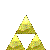

Zelda 64

Jonathan Valentin 2000-2004
VisualBasicZone.com
Zelda 64 Links
Zelda 64 Pictures Not in the Game!
Zelda 64 GameShark Codes!
My favorite Zelda game of all time has to be Zelda Orcania of Time. It was the first 3d Zelda game. The story and gameplay was awesome.
Zelda Fan Game Central
- a great community with lots of zelda fan games.
Zelda Game Maker
- a project that I started never finished it though. But it is open source. Enjoy!